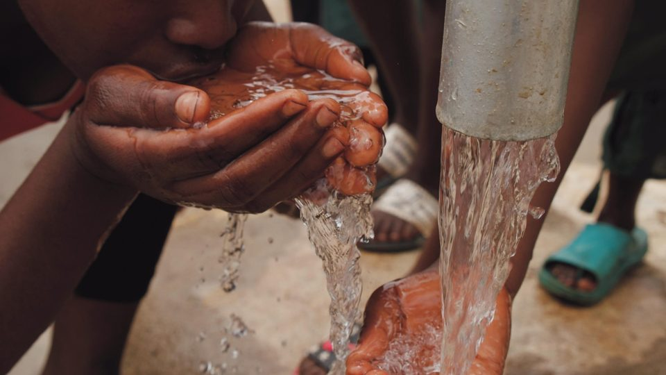
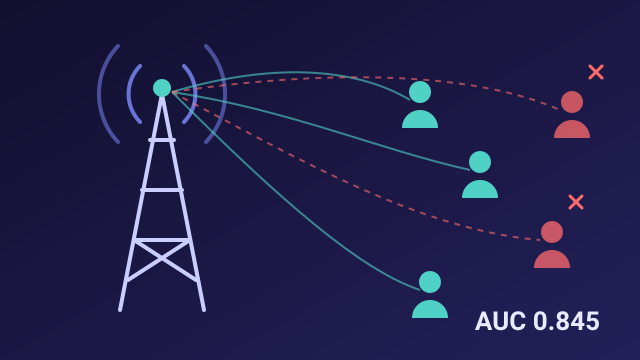

Valerie
Komen.
Numbers you can defend.
SQL, Python, and Power BI — with a civil engineering background that shows up as quantitative rigor and a bias toward honest, defensible results over polished-looking ones. Open to fully remote roles.
From road sites to datasets.
I started as a civil engineer — road construction quality control, cost estimation, project dashboards, contractor performance tracking — and moved into data analytics because that work was, underneath the job title, already data work: collecting field data, reconciling inconsistent records, building reports that had to hold up under scrutiny.
Every project below is a real, end-to-end pipeline — data cleaning through machine learning through an interactive dashboard — and every one reports honest results, including where a model didn't work as well as hoped. I'd rather show you a real limitation than a polished number I can't defend in an interview.
Projects that hold up.
Coffee Sales Analytics & ML
End-to-end pipeline on 1,000 orders — customer segmentation, and a repeat-purchase classifier reported honestly when it didn't beat a naive baseline.

27.6M peopleWater Access Analytics
Reconciled 4 inconsistent data exports covering 27.6M people; found only 46% have basic water access, and caught a real cross-validation bug along the way.
Farm Yield Prediction
Found and fixed two real data bugs before modeling, parsed 10 free-text weather message templates via regex, and predicted crop yield at R² = 0.96.

ROC-AUC 0.845Telco Churn Prediction
Identified contract length, fiber optic service, and payment method as the strongest churn drivers; built a classifier with stable cross-validated ROC-AUC of 0.845.
Coffee Sales Analytics (Excel)
Interactive Excel dashboard analyzing 1,000 orders — sales trends by product, country, and top customers, built entirely with PivotTables and PivotCharts.
What I work with.
Languages & tools
- SQL
- Python
- pandas
- scikit-learn
- Excel
- Power BI
- Plotly
- Git & GitHub
Techniques
- Data cleaning
- Multi-source reconciliation
- EDA
- Classification
- Regression
- Feature engineering
- Cross-validation
How I work
- Honest reporting
- Statistical rigor
- Data storytelling
- Interactive dashboards
- Field-data experience